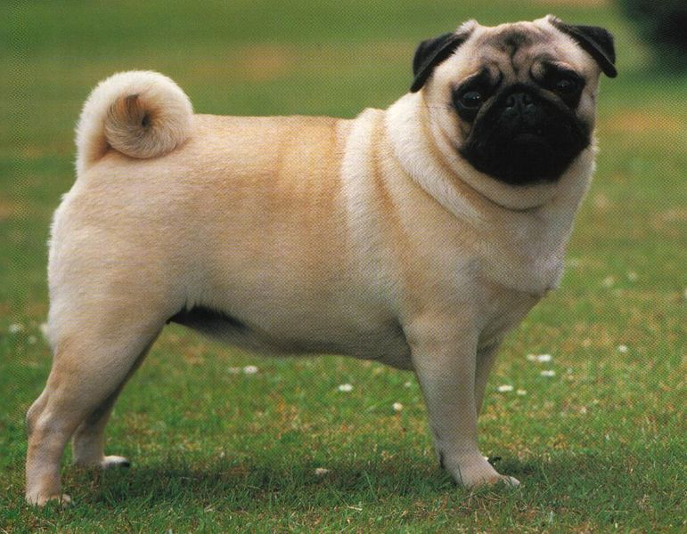
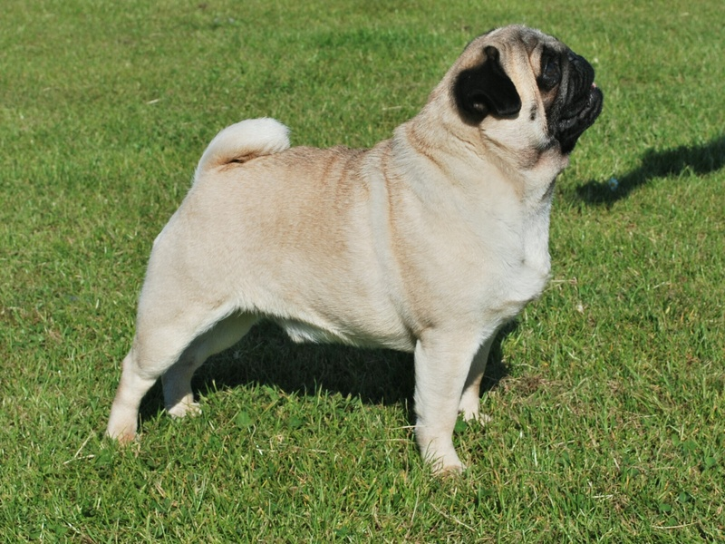

Mopsz2
A fajta jellemzői
Viselkedés és jellem:
A mopsz 2 éves koráig hiperaktív kutya, akit már ilyenkor következetesen kell nevelni. Ez könnyen elérhető, ugyanis természetéből fakadóan utálja, ha a gazdája haragszik rá, és mivel szeret enni, ezért a jutalomfalatkákkal is kitűnő eredményeket érhetünk el nála, viszont vigyázni kell, mert hízásra hajlamos fajta.Az átlagéletkora 9-11 év A mopsz külseje megtévesztő a tudatlan szemlélő számára. Ez a ráncos képű, dülledt szemű, mindig zsémbes arckifejezést öltő kutya valójában vidám, érzékeny, hűséges, szeretetre méltó, gyengéd lelket takar.
Fizikai jellemzők
jellemzők:
Kis termetű, zömök kutyafajta. Teste négyzet alakú és tipikusan gömbölyűfejű eb. Szeme nagy, sötét és kidülledő, az embernek az az érzése, hogy mindig szomorú. Szőrzete rövid és fényes, nem igényel olyan sok ápolást, mint a hosszúszőrű fajták. Színe lehet ezüst, fakó, barackszínű és fekete, és ne felejtsük el redő homlokát, fekete maszkját és elasztikus bőrét, amik a legtipikusabb jellemzői a mopsznak.
Ideális magassága:
30–32 cm
Súlya:
6,5–8,5 kg

Link:
Főoldal